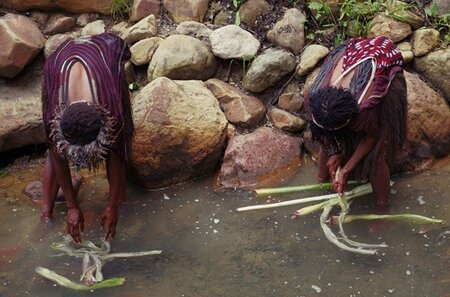
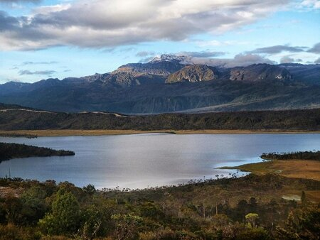
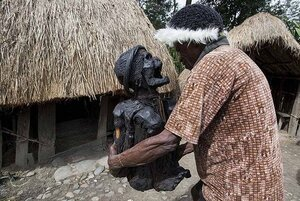
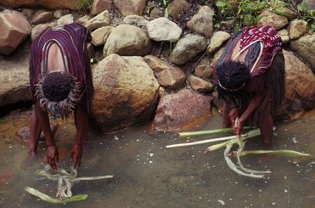
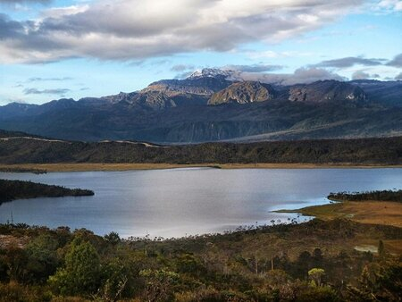
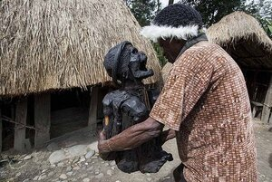

Jayawijaya
Di Papua terdapat satu kabupaten yang bernama Jayawijaya, nah kabupaten ini kamu akan menjumpai banyak destinasi wisata alam yang khas. Berikut adalah tempat wisata di Jayawijaya paling wajib kamu kunjungi.
Puncak Jayawijaya
Puncak Jayawijaya atau yang biasa disebut dengan Puncak Carstensz adalah satu-satunya puncak gunung di Indonesia yang memiliki salju abadi. Puncak ini menjulang setinggi lebih dari 5.000 meter di atas permukaan laut. Yang lebih membanggakan lagi adalah Gunung Jayawijaya masuk ke dalam daftar Seven Summits atau tuju gunung dengan puncak tertinggi du dunia.
Puncak Jayawijaya ini pertama kali ditaklukan oleh seorang penjelejah asal Belanda bernama Hendrik Albert Lorentz pada tahun 1909. Lorentz berhasil
Soal wisata, Pegunungan Jayawijaya sejatinya merupakan tempat petualangan terbaik. Sebab, menampilkan bentang alam yang luar biasa indah, kekayaan flora dan fauna dan formasi bebatuan.
Sumber Air Garam Putagina
Sumber Air Garam Putagina merupakan wisata wamena yang berlokasi di distrik Asotipo. Keberadaan sumber air garam ini sangat dibutuhkan oleh masyarakat setempat. Sebab olahan garam yang dihasilkan akan dipergunakan untuk menciptakan rasa pada masakan yang mereka olah.
Kolam air garam yang akan kamu jumpai memiliki air yang jernih, seperti air pada umumnya. Rasa asin pun akan terasa saat kamu mengecap rasa air danau tersebut. Hal lain yang menjadikan wisata ini unik karena lokasinya yang dekat dengan sungai air tawar. Jaraknya hanya 12 meter saja dan berada di bawah kaki gunung.
Danau Habema
Danau Habema adalah wisata wamena Jayawijaya selanjutnya yang bisa kamu kunjungi. Lokasinya berada di Kawasan konservasi Jayawijaya atau lebih tepatnya berada di Kawasan Taman Lorentz. Sebuah tempat wisata yang menawarkan keindahan panorama alam masih terga. Untuk letak danaunya sendiri berada pada ketinggian 3.225 meter di atas permukaan laut. Saat berkunjung ke sini kamu akan disambut dengan udara yang segar dan bersih. Pemandangan alam nya pun sangat memanjakan mata.
Wisata Alam Distrik Kurulu
Saat berkunjung ke Papua, kamu harus menyiapkan waktu yang panjang ya. Sebab ada banyak sekali tempat wisata yang harus kamu kunjungi. Nah, wisata di Jayawijaya yang bisa kamu kunjungi selanjutnya adalah Wisata Alam Distrik Kurulu. Sebuah wisata alam yang menyajikan berbagai keindahan alam khas Papua. Kamu juga akan diajak untuk melakukan susur gua dan melihat adat kebudayaan mumifikasi jasad kepala suku atau panglima kepala suku perang, dan banyak lagi.
 




